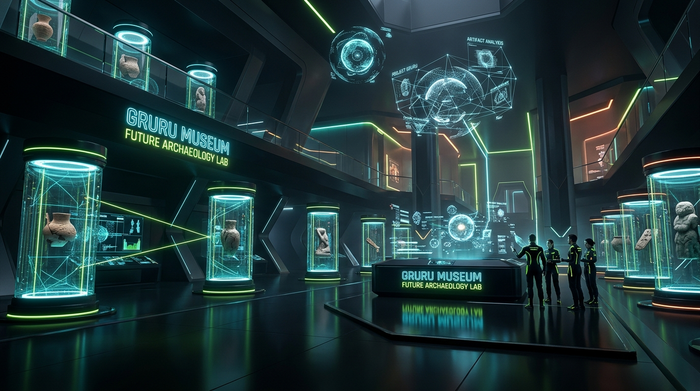

GRURU MUSEUM
“New Knowledge. New Storytelling. Built for Everyday Living.”
การปะทะกันของ 2 ขั้ว: ความนิ่งเรียบแบบแกลเลอรี Modern Art ผสมผสาน ความล้ำสมัยของห้องแล็บ Sci-Fi เพื่อปลุกความรู้ในอดีตให้กลายเป็นเรื่องเล่าที่คนรุ่นใหม่หยิบไปใช้ได้จริงทุกวัน

ช่องว่างทางการตลาด: อยากรู้ลึก แต่ไม่อยากรู้สึกว่ากำลังเรียน
UNCONTESTED NICHE
สารานุกรมน่าเบื่อ vs คลิปสั้นที่ตื้นเขิน
เนื้อหาในปัจจุบันมีเพียง 2 ขั้ว: สารานุกรมออนไลน์ที่แห้งผากและเล่าแบบเส้นตรง กับคอนเทนต์วิดีโอสั้นที่หวือหวาแต่ไม่มีแหล่งอ้างอิงและไร้ความเชื่อมโยง
วิสัยทัศน์ และ 5 ขั้นตอนการแปลงความรู้สู่วิถีชีวิต
built for everyday living.”
Excavate
คัดสรรและขุดค้นความรู้จากประวัติศาสตร์ วิทยาศาสตร์ และภูมิปัญญาโบราณ พร้อมระบุแหล่งอ้างอิงชัดเจน
Decode
ถอดรหัสข้อเท็จจริงให้กลายเป็น Entities (โหนด) และความสัมพันธ์ (Semantic Relations) ใน Knowledge Graph
Retell
นำเสนอผ่าน Visual Storytelling สไตล์ Modern Art ที่ย่อยง่าย เข้าใจประเด็นสำคัญได้ภายใน 3 นาที
Connect
เปิดให้สำรวจข้ามยุคสมัยด้วย Data Booming และ Interactive Graph แผนที่ความรู้ฉบับเต็ม
Apply
ปิดท้ายทุกนิทรรศการด้วยการ์ด Everyday Takeaway สรุปสิ่งที่นำไปทำตามได้จริงทันที
3 กลุ่มเป้าหมายหลัก: ตอบโจทย์พฤติกรรมเฉพาะจุด
1-CLICK SOURCE VERIFICATION
Data Booming: เข้าใจความเชื่อมโยงภายใน 3 วินาที
ทำไมผู้บริหารและคนรุ่นใหม่ถึงหลงรัก?
- ✓ Non-Linear Exploration: ไม่ต้องอ่านบทความยาว 10 หน้า แต่เห็นภาพรวมทั้งระบบในพริบตา
- ✓ Cognitive Anchor: เริ่มจากจุดที่คุ้นเคย (เช่น กาแฟ) แล้วขยายสู่ประวัติศาสตร์และเคมี
- ✓ Micro-Reward: แสงเรืองรองและเสียง decode ช่วยกระตุ้นความจำและการแชร์ต่อ
เมล็ดกาแฟ (Coffee Bean)
จุดยึดเหนี่ยวเริ่มต้น: วัตถุทางประวัติศาสตร์และพฤกษศาสตร์ที่ขับเคลื่อนเศรษฐกิจโลกและวิถีชีวิตคนทำงาน
สถาปัตยกรรมกราฟความรู้ & การผสานชุดข้อมูลจริง
FROM RAW CSV TO EVERYDAY INTELLIGENCE

ข้อมูลจริง: การบริโภคกาแฟทั่วโลก (Domestic Consumption)
ตัวอย่างการแปลงตัวเลขดิบ 2.78 หมื่นล้านกิโลกรัม สู่เรื่องเล่าการปฏิวัติวัฒนธรรมร้านกาแฟและวิธีเลือกดื่มของคนเมือง:
สำรวจเครือข่ายความรู้: 6 มิติเชื่อมโยงไร้รอยต่อ
คาเฟอีนและตัวรับอะดีโนซีน (Caffeine & Adenosine)
คาเฟอีนมีโครงสร้างโมเลกุลคล้ายอะดีโนซีน จึงเข้าจับกับตัวรับในสมองเพื่อสกัดกั้นสัญญาณความง่วง ส่งผลให้โดปามีนและอะดรีนาลีนทำงานได้อย่างมีประสิทธิภาพ
ดีไซน์ตาม Brief: Past Warm × Future Electric
WCAG AA COMPLIANCE (16.8:1)
ชุดสี 2 ขั้ว: อดีตอันอบอุ่น × อนาคตเรืองแสง
70% พื้นดำและสีกระดาษ, 20% ผิวการ์ดและเส้นตาราง, 10% สีแบรนด์เน้นจุดสำคัญ
#D7FF3A
#FF5A1F
#8C6BFF
#2EE6FF
3 ฟอนต์เฉพาะกิจ + องค์ประกอบ HUD คมชัด
โครงสร้างพิพิธภัณฑ์ดิจิทัล: 5 โถงนิทรรศการหลัก
SMART, WITTY, EVIDENCE-BASED
Exhibitions
Knowledge Graph
Data Booming
Everyday Lab
Archive & About
แผนงานพัฒนา: 4 สปรินต์สู่การเปิดตัวจริง
TIME-TO-MARKET: 8 WEEKS
Tokens & Style Guide
- • วาง CSS Variables (--gr-void, --gr-lime ฯลฯ)
- • ฟอนต์ Chakra Petch, IBM Plex Sans/Mono
- • สร้างหน้า
/style-guide - • ตรวจสอบ Contrast ตาม WCAG AA
Components & Patterns
- • การ์ดตัดมุม HUD Chamfer 45°
- • Specimen Label & Specimen Grid (+ markers)
- • Motion tokens: Scan → Decode → Connect
- • Mobile responsive navigation
Core Museum Halls
- • หน้า Home, Exhibitions (Hall 01)
- • Everyday Lab (Hall 04) พร้อมคลัง Takeaways
- • About & Archive (Hall 05)
- • Social Card Export (1080×1350 px)
Dual Graph Engines
- • Data Booming Engine (Radial 40ms stagger)
- • D3.js Force-Directed Canvas Graph
- • ชิพชุดข้อมูลจริง 50+ โหนด JSON
- • Performance tuning 60 FPS บนมือถือ
สรุปข้อเสนอ: การตัดสินใจเพื่อสร้างความได้เปรียบทางธุรกิจ
FIRST-MOVER ADVANTAGE IN SEA
ผู้นำหมวดหมู่ใหม่ (Blue Ocean)
เป็นพิพิธภัณฑ์ความรู้ดิจิทัลแนว Sci-Fi แห่งแรกในภูมิภาค ที่ผสานสุนทรียะ Modern Art เข้ากับกราฟความรู้ระดับ Deep Tech สร้างจุดยืนที่คู่แข่งลอกเลียนแบบได้ยาก
การมีส่วนร่วมสูง & ไวรัลตามธรรมชาติ
นวัตกรรม Data Booming และการ์ด Everyday Takeaway (1080×1350) ช่วยเพิ่ม Dwell Time 4 เท่า และกระตุ้นการแชร์บนโซเชียลมีเดียแบบ Organic
ต่อยอดรายได้หลากหลายมิติ
สถาปัตยกรรมข้อมูลสามารถต่อยอดสู่งาน Pop-up Exhibition กายภาพจริง, ความร่วมมือกับแบรนด์ชั้นนำ (Brand Sponsorships), และการเปิด API ชุดข้อมูลความรู้